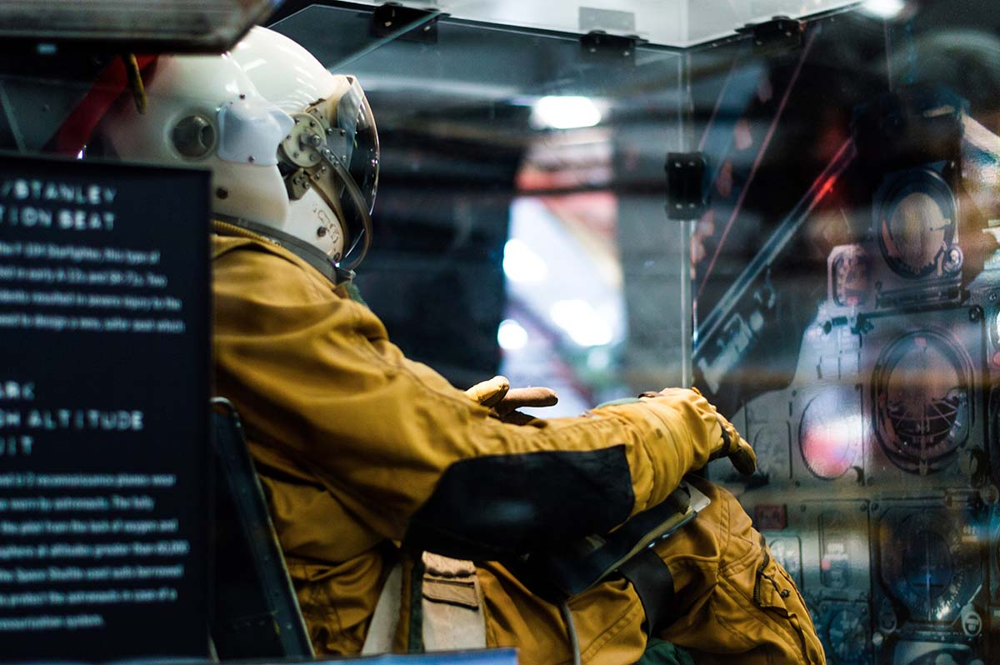
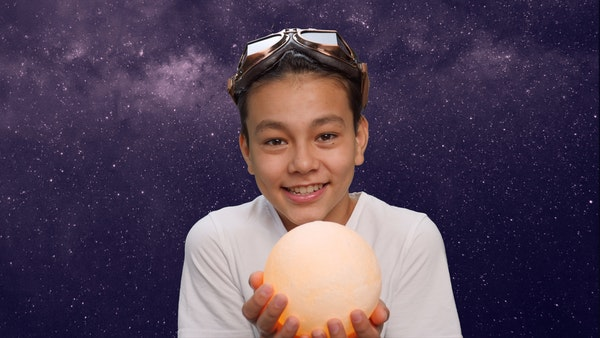

Come join us at the Community Science Museum where we’re committed to making science accessible to all.

Over the course of human history, science has developed from our early understanding of fire,
wind, water, and earth to exploring everything from galaxies far away to the very building blocks of life
itself.The aim of our museum is to create a space where everyone can experience the wonders of our
discoveries and perhaps even ignite a lifelong passion to continue the exploration of the world around us.
We believe science should not be confined to the textbook, but brought to live through exhibits.
This is why we have over 1000 different exhibits on the many varied subjects of science to explore.

Many of these exhibits are designed for you to interact with and play around to see science
come to life (apart from the dinosaur exhibits – they only come to life at night when everyone’s gone
home).